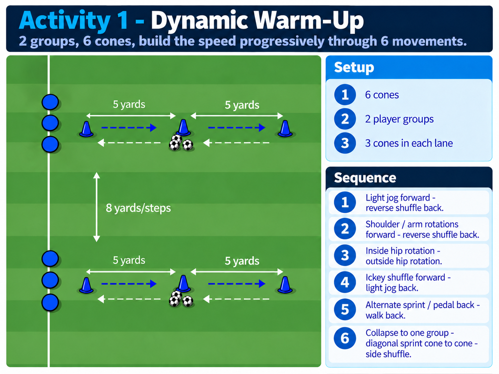
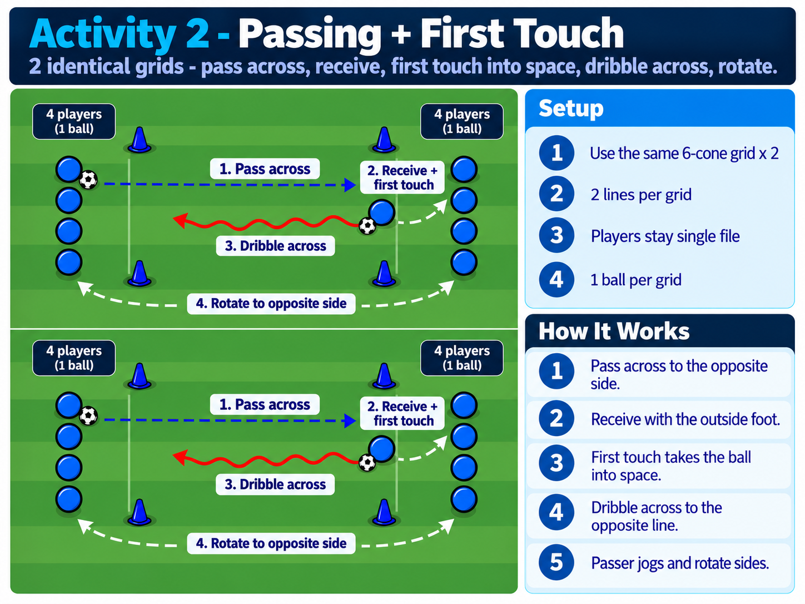
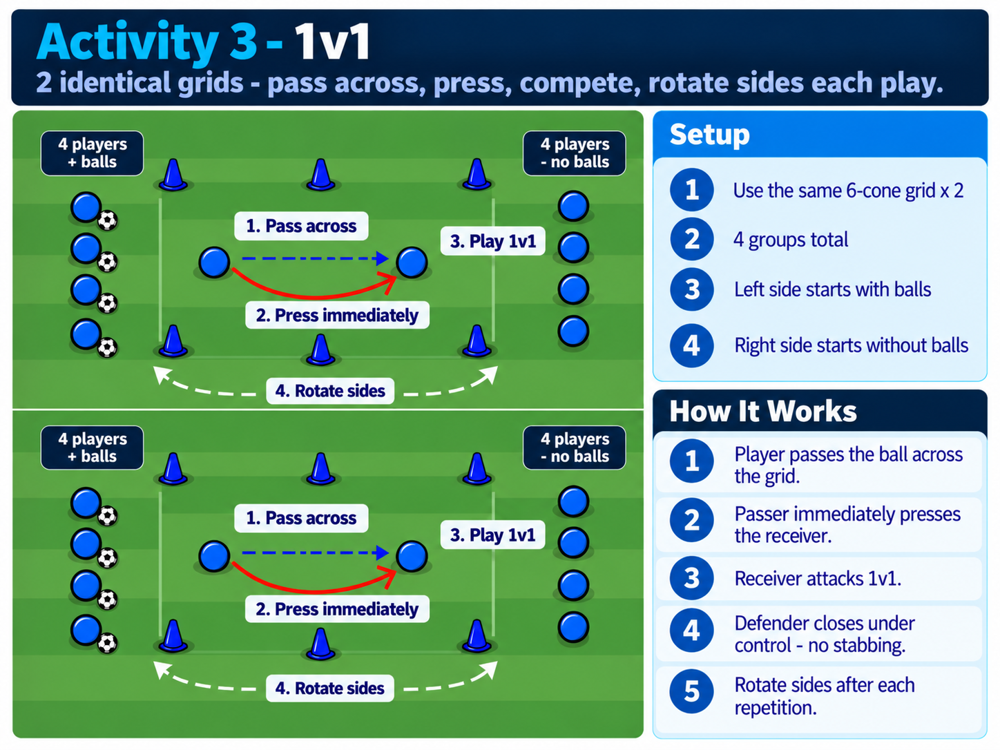
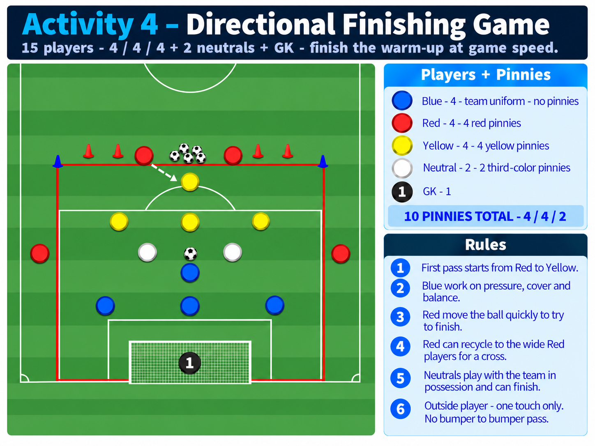
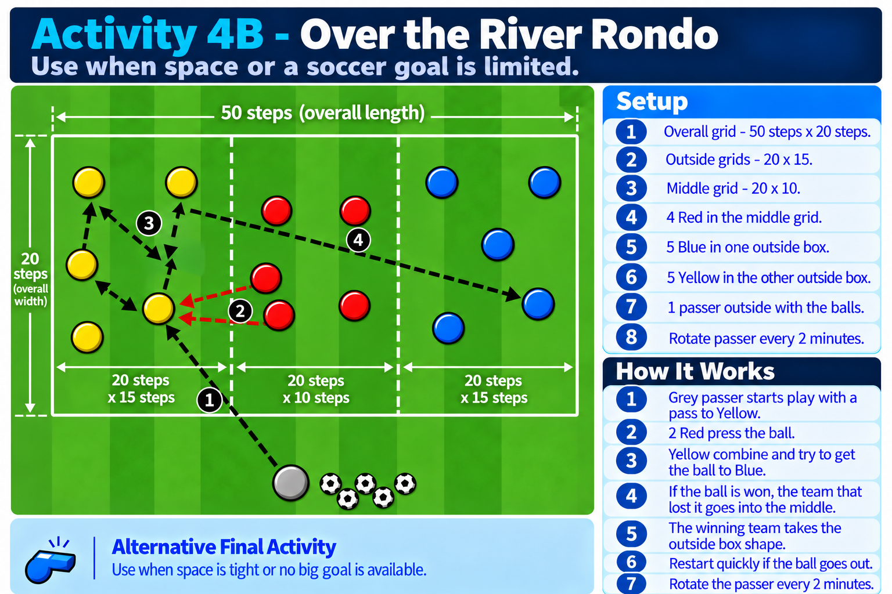

Follow the routine in order
Tap an activity below, look at the picture, set it up, and start.
No coach setup or instruction is needed - players handle cones, balls, pinnies, goals, groups and transitions.
0:00-6:00Dynamic
6:00-7:00Water
7:00-13:00Passing
13:00-19:001v1
19:00-20:00Water
20:00-30:00Final Game
For the last 10 minutes, use Activity 4 if you have space and a goal. Use Activity 4B as the backup activity if space is limited.
Bring This Out First
Players set up everything before the warm-up starts.
10Cones
10Pinnies
10Balls
Activity 1Dynamic Warm-Up
6 MIN

Activity 2Passing + First Touch
6 MIN

Activity 31v1
6 MIN

Activity 4Directional Finishing Game
10 MIN

Activity 4BOver the River Rondo - Backup Activity
10 MIN
Use this as the backup activity when space is tight or no big goal is available. 5 Blue work in one outside box, 5 Yellow work in the other outside box, 4 Red work in the middle grid, and 1 grey passer starts play to Yellow. Red press, Yellow combine, and try to get the ball to Blue. Rotate the passer every 2 minutes.

Player-Run Standards
Same expectations every game - all player run.
1Players get the equipment and set up each activity.
2Move quickly from one activity to the next.
3Start smooth and build to game speed.
4Keep the ball moving and avoid standing.
5In 1v1 - defend under control - no stabbing.
6Water breaks are 1 minute.
7In the final game - react immediately when possession changes.
8Use Activity 4B as the backup activity when you do not have enough space or a big goal. In 4B, the grey passer starts with Yellow, Red press, and Yellow try to find Blue.
9Finish the routine ready for kickoff.